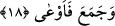

18. (Servet) toplayıp yığan kimseyi (kendine) çağırır!
Hırsla ve dünya sevgisi ile “mal toplayıp yığan kimseyi (kendine) çağırır!” Alevli
cehennemin böylesi kimseleri çağırmasının mânâsı, o tür kişileri kendisine doğru
çekmesi ve kendine getirmesidir. İfâde bu hâliyle cehennemliklerin cehenneme
getirilmelerinin mecâzî yoldan anlatımıdır. Sanki cehennem onları çağırmış da onlar da
orada hazır olmuşlardır.
Kâşifî şöyle demiştir: “Alevler yükselir, kâfiri, mıknatısın demiri kendine çektiği gibi
yüz senelik veya iki yüz senelik mesâfeden kendine çeker.”
Cehennem onlara “Bana gel, bana gel ey kâfir, ey münâfık, ey zındık! Senin yerin
benim!” diye seslenir. Ya da âyete şöyle mânâ vermek mümkündür: Cehennem kâfirleri
ve münâfıkları fasih bir lisân ile isimleriyle çağırır, sonra da onları kuşun taneyi
kapması gibi birden kapıverir. Allah Teâlâ’nın cehenneme konuşma kâbiliyeti vermesi
mümkündür, tıpkı kâfirlerin derilerine, ellerine ve ayaklarına konuşma kâbiliyeti verip
de bu organların o kişilerin işledikleri günahı ifâde etmeleri gibi.[96] Nitekim Allah aynı
konuşma yeteneğini ağaçta da yaratmıştır.[97]
Âyet-i kerîmeyi şöyle anlamak da mümkündür; Cehennemin zebânîleri o kâfirleri
çağırır. Bu takdirde cehennem kelimesinin başındaki “zebânî” kelimesi hazfedilmiş olur
veya burada böyle bir hazften söz etmeden, ifâdede isnâd-ı mecâzî vardır, deriz. İsnâdın
yönüne gelince, çağıran zebânînin fiili, kendisine çağrılan cehenneme isnâd edilmiş
olur.
et-Te’vilatü’n-necmiyye’de bu âyet-i kerîme şöyle tefsir olunuyor: Kim, şerîata uygun
ve tabîata muhâlif davranarak Hakk’a yönelmekten yüz çevirir, âhirete yönelme ve
dünyaya sırt çevirmekten yüzünü dönerse onu cehennem kendine çağırır.
Kâşânî ise şöyle diyor: İnsanın nefsi cehenneme uygun bir hâle geldiği için nefis
kendiliğinden cehenneme sürüklenir. Zîrâ şöyle bir kâide vardır: Cins dâima kendi
cinsine doğru meyleder ve akar. “Lezâ”, süflî tabîatın ateşidir, bu ateş ancak Hak’tan,
kudsî makamdan ve nur âleminden yüz çeviren, yüzüyle zulmet kaynağına doğru dönen
ve zulmânî, süflî, fânî cevherin sevgisini tercih eden kimseyi kendine çağırır. Böyle bir
kimse, yapısı gereği tabiî ateşin maddelerine doğru kendiliğinden çekiliverir ve ateş
onu çağırıp kendine çeker. Çünkü böyle bir tabîat ve nefis, o ateşle aynı cinsten
olmuştur. Dolayısıyla onun yüreklere hâkimiyet kuran rûhânî nârı ile yanar. Böyle bir
kimsenin o ateşten kurtulması nasıl mümkün olur! Çünkü kendisini tabîatın çağırıcısı
taleb etmektedir ve isti’dad ve kâbiliyetin diliyle onu kendine çağırmaktadır.
Ateş, bir de dünya hırsı ve muhabbetiyle mal toplayıp yığan kimseyi kendine çağırır.
Böyle bir kimse dünya malını bir kabın içerisine doldurup orada depo etmiştir.
Topladığı ve depoladığı o malın zekâtını ve üzerine vâcip olan haklarını edâ etmemiş,
din ile meşguliyetten uzak durmuş, mal elde etmesi sebebiyle böbürlenmiştir. Onun bu
hareketleri yapmasının sebebi, beslediği uzun emel ve Allah’ın kullarına karşı şefkat